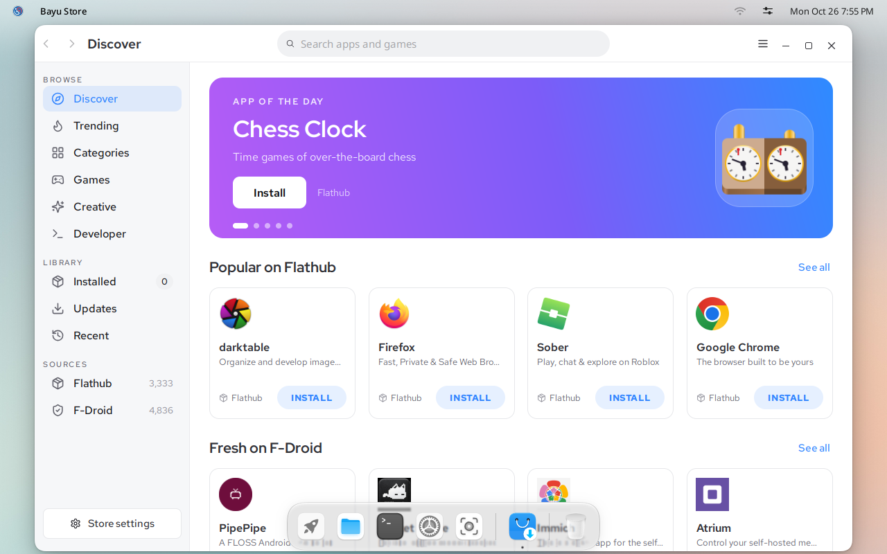
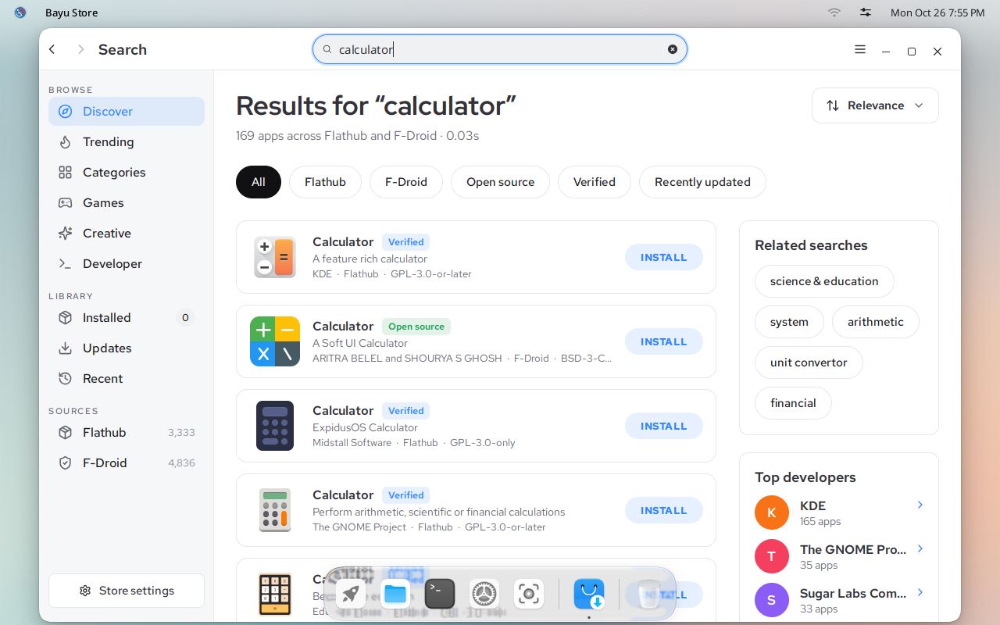
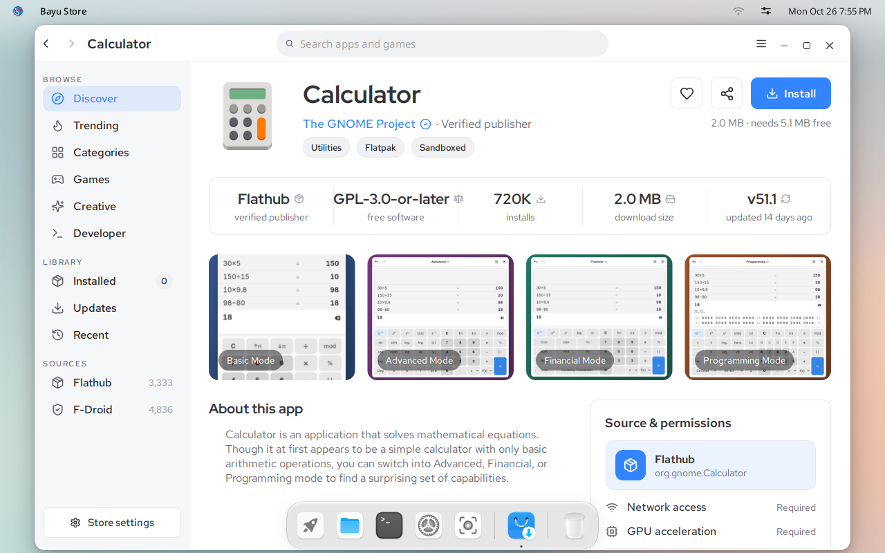

IGN 26 Docs
Install apps
Bayu Store installs Linux apps from Flathub and Android apps from F-Droid, from one search.
Open Bayu Store from the launcher. The first time, it downloads the list of apps. This takes a minute or two and happens once.


Find an app
Type in the search box at the top and press Enter. Results from Flathub and F-Droid appear together. Use Flathub or F-Droid under the title to show only one of them.


Install it
Click the app's name to open its page. It shows who makes it, its licence, the download size and what the app may access.

Click Install. The button shows the progress.
When the button says Open, the app is installed. Click Open, or find it in the launcher.

Apps from F-Droid are Android apps. The first one you install asks to turn on Android. See Android apps.
Updates
Bayu Store installs app updates in the background. To see what changed, open Updates in the sidebar. To turn this off, open Store settings and switch off Install updates automatically.
Bayu Store updates apps only. To update the system itself, run sudo dnf upgrade in Terminal.
Remove an app
Open Installed in the sidebar, open the app's page and click the trash can button next to Open.
Next: Android apps.